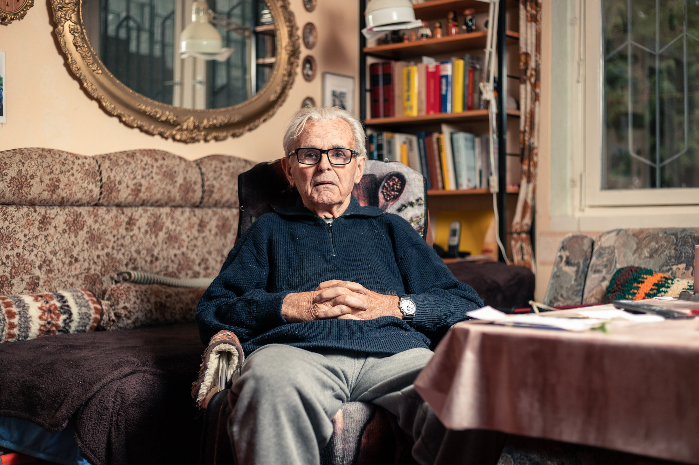

Hallöchen, I am Georg.
Born Human, trained copywriting Creative Concepter and studied Interface Designer.
What are you interested in?
X Projects
UI Design • Copywriting
Kleinanzeigen. Fein anzeigen.
This project was created under the hand of Frank Rausch in his FH;P Course “Apps & Details”. The task was to redesign an App while strictly following the iOS-Guidelines.
I’ve chosen to tackle Ebay Kleinanzeigen.
Since I’ve done my copywriting in German for this project, as this service only exist in Germany, I kept the following text in its original version. If you are interested in my workflow, hit me up
Visual Design • Concept • Copywriting
Ganzheitliches Gestalten.
So schlimm wie die Corona-Pandemie auch war, hat sie für mich einige neue Kapitel geöffnet – so auch dieses. Im Jahr 2020 finge ich an für meinen Vater zu arbeiten und ihm beruflich unter die Arme zu greifen. Als Gärtner, der seine Produkte an die Gastronomie verkauft, musste in dieser Zeit drastisch umdenken. Seiner Kreativität sei dank, machte er aus den nicht verkauften Überresten fermentiertes Gemüse, das er online zum Verkauf anbot. Ein Geniestreich, weil: nachhaltig, trendy und pandemieunabängig.
Mein Job war es, ganz bescheiden gesagt, seinen kompletten Markenauftritt zu professionalisieren. Eine gigantische Aufgabe, die aber viel Potential und Spaß mit sich brachte. Eine meiner ersten Aufgaben war es, die Produkte für das fermentierte Gemüse neu zu gestalten.
Ein wahres Musterbeispiel, was ich mir unter der perfekten Aufgabe vorstelle: ein moralisch vertretbares und nachhaltiges Produkt, das ich komplett von Null aufbauen darf. Ich musste den Markt untersuchen, Strategien und Konzepte erarbeiten, durfte grafisch frei drehen, konnte typografisch sauber arbeiten und textlich überraschen – schlussendlich wurde alles auch noch abfotografiert.
Ich merke immer wieder, gerade wenn sie nicht präsent ist, dass diese Vielfalt des kreativen Schaffens bei mir für eine innere Stabilität sorgt, die mich seelisch belebt und rundum glücklich macht.
Könnte ich es mir aussuchen, würde ich nur so arbeiten.
Visual Design • Photography • Copywriting
Mein erstes Buch.
Ein zweites und nicht minder komplexes Projekt in meinem Praktikum bei meinem Vater, war das bis dato größte Projekt meines Lebens:
Mein allererstes Kochbuch.
In Zusammenarbeit mit dem DUMONT-Verlag und meinem Vater entstand im Laufe eines Jahres ein Kochbuch mit 85 Rezepten. Der Fokus lag auf dem Kochen mit fermentiertem Gemüse, weil: Viele wissen, wie man fermentiert, aber die wenigsten wissen, wie man damit kocht.
Das Projekt war umfangreich: Nachdem das Konzept stand, mussten Rezepte gesucht, umgeschrieben und selektiert werden. Weil wir zwei auch unsere eigene Produktionsfirma waren, mussten wir passend zur Bildsprache das komplette Equipment zusammenkaufen. Als alles vorbereitet war, wurde gekocht – und das 30 Tage durchgehend, eine Art Food-Camp. Auch hier war das Lernvolumen immens! Essen zu fotografieren, geschweige denn Essen anzurichten ist nicht leicht. Es ist organisch und verändert sekündlich seine Form.
Und auch wieder hier: Es war unfassbar erfüllend, wie vielfältig ich meine Kreativität und das Gelernte aus dem Studium einsetzen konnte. Es fing bei der Geschmackswelt an und illustrierte sich im Farbspiel des Essens wie auch in der Anrichtungsweise auf dem Teller. Darüber hinaus durfte ich alles fotografisch einfangen, typografisch (mit Hilfe der DUMONT-Gestalterin) setzen und mit meinen eigenen Worte textlich an die Köch*innen bringen.
Diese Projekte haben mir bestätigt, dass es für mich, gerade als Interface-Designer, sehr wichtig ist, den Bezug zur analogen Welt nicht zu vergessen. Ich denke, dass beide Welten sehr viel voneinander lernen können.
UI Design • Concept • Copywriting
Ein neues Fell für die Robbe.
“The ArtWalk of History” is the oldest catwalk in history. It is the first digital fashion show where “models” from the 15th–19th century conquer the stage and try to fascinate with an extraordinary wide range of historical garments, costumes and accessories.
Starting point for this idea was the collection (digitised and curated by the UCLAB) of the Berlin Publishers Frieda and Franz von Lippernheide, who gathered over time around 1600 paintings, sculptures and garments – all in the attention of fashion.
While working on different concepts, the catwalk seemed like the perfect environment to offer an accessible and very engaging platform to experience this (fashion) art collection. It wasn’t just a familiar platform to fashion fans and thereby a product with low affordance, it was also an exciting instrument to convey this collection.
Conventional presentations of cultural collections like in many museums need to be questioned – we tried to do that here.
This team project was born in the course “Visualising Cultural Collections” lead by Marian Dörk. My team colleagues were Mariana Reinhardt and Kerstin Humm.
UI Design • Copywriting
The Artwalk of History.
“The ArtWalk of History” is the oldest catwalk in history. It is the first digital fashion show where “models” from the 15th–19th century conquer the stage and try to fascinate with an extraordinary wide range of historical garments, costumes and accessories.
Starting point for this idea was the collection (digitised and curated by the UCLAB) of the Berlin Publishers Frieda and Franz von Lippernheide, who gathered over time around 1600 paintings, sculptures and garments – all in the attention of fashion.
While working on different concepts, the catwalk seemed like the perfect environment to offer an accessible and very engaging platform to experience this (fashion) art collection. It wasn’t just a familiar platform to fashion fans and thereby a product with low affordance, it was also an exciting instrument to convey this collection.
Conventional presentations of cultural collections like in many museums need to be questioned – we tried to do that here.
This team project was born in the course “Visualising Cultural Collections” lead by Marian Dörk. My team colleagues were Mariana Reinhardt and Kerstin Humm.
Visual Design • Concept
Bauer & Baron.
“The ArtWalk of History” is the oldest catwalk in history. It is the first digital fashion show where “models” from the 15th–19th century conquer the stage and try to fascinate with an extraordinary wide range of historical garments, costumes and accessories.
Starting point for this idea was the collection (digitised and curated by the UCLAB) of the Berlin Publishers Frieda and Franz von Lippernheide, who gathered over time around 1600 paintings, sculptures and garments – all in the attention of fashion.
While working on different concepts, the catwalk seemed like the perfect environment to offer an accessible and very engaging platform to experience this (fashion) art collection. It wasn’t just a familiar platform to fashion fans and thereby a product with low affordance, it was also an exciting instrument to convey this collection.
Conventional presentations of cultural collections like in many museums need to be questioned – we tried to do that here.
This team project was born in the course “Visualising Cultural Collections” lead by Marian Dörk. My team colleagues were Mariana Reinhardt and Kerstin Humm.
Concept • Visual Idea
OBI – DIY is cheaper.
OBI is Germany’s biggest DIY Store. To emphasise that I wanted to show that it literally pays up to go to OBI. The idea was the recreate famous art by OBIs DIY products.
Instead of buying a plain blue painting by Barnett Newman for $109.9 million you can simply do it yourself with the products of OBI - for only 32.97€.
This was supposed to be shown as a print campaign as well as a promo action.
My part for this project: concept & idea.

Photography
Portrait Photography
So schlimm wie die Corona-Pandemie auch war, hat sie für mich einige neue Kapitel geöffnet – so auch dieses. Im Jahr 2020 finge ich an für meinen Vater zu arbeiten und ihm beruflich unter die Arme zu greifen. Als Gärtner, der seine Produkte an die Gastronomie verkauft, musste in dieser Zeit drastisch umdenken. Seiner Kreativität sei dank, machte er aus den nicht verkauften Überresten fermentiertes Gemüse, das er online zum Verkauf anbot. Ein Geniestreich, weil: nachhaltig, trendy und pandemieunabängig.
Mein Job war es, ganz bescheiden gesagt, seinen kompletten Markenauftritt zu professionalisieren. Eine gigantische Aufgabe, die aber viel Potential und Spaß mit sich brachte. Eine meiner ersten Aufgaben war es, die Produkte für das fermentierte Gemüse neu zu gestalten.
Ein wahres Musterbeispiel, was ich mir unter der perfekten Aufgabe vorstelle: ein moralisch vertretbares und nachhaltiges Produkt, das ich komplett von Null aufbauen darf. Ich musste den Markt untersuchen, Strategien und Konzepte erarbeiten, durfte grafisch frei drehen, konnte typografisch sauber arbeiten und textlich überraschen – schlussendlich wurde alles auch noch abfotografiert.
Ich merke immer wieder, gerade wenn sie nicht präsent ist, dass diese Vielfalt des kreativen Schaffens bei mir für eine innere Stabilität sorgt, die mich seelisch belebt und rundum glücklich macht.
Könnte ich es mir aussuchen, würde ich nur so arbeiten.